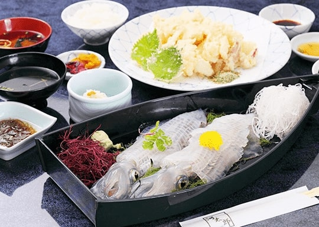

嬉野温泉エリア
ホーム > ロマサガＲＳ > ロマサガＲＳ佐賀コラボ_2021年 > 嬉野温泉エリア7/30～7/31 嬉野温泉エリア
次は嬉野温泉エリアです。対象のマップは以下。
ここではメタルブラックと水の将魔がボスでした。
呼子のイカ（メタルブラック）
メタルブラックは「イカスミブラック」という技を使ってきました。持っている剣もイカの形をしていますね。
佐賀県でイカと言えば呼子のイカでしょうか。うれしの温泉情報局というサイトで、呼子のイカが紹介されています。
去年はノエルが呼子のイカを担当していました。
佐賀県の唐津市呼子町は「イカの活造り」が生まれた町。
河太郎というお店が呼子のイカを使った活造りの発祥のお店らしいですよ。
河太郎呼子店

画像は河太郎呼子店より抜粋。
佐賀牛（水の将魔）
水の将魔は「温泉トリップ」という技を使ってきました。
しかし注目すべきはその姿。完全に牛ですね。佐賀牛です。
去年はダンターグが佐賀牛を担当していました。
これは本物の佐賀牛の画像です。う、、、うまそう・・・・！！！！
公式サイトや公式のtwitterもある模様。興味ある方はフォローしてみては？
公式の佐賀牛のサイト
公式のtwitter
※画像は公式の佐賀牛のサイトより抜粋
その他嬉野温泉エリア関連情報
椎葉山荘
Loading画面のこの写真は「椎葉山荘」です。
椎葉山荘は温泉宿ですね。実際の写真は以下
※写真は椎葉山荘 公式サイトより抜粋
嬉野の茶畑
次は「嬉野の茶畑」

嬉野には茶畑があるのでその写真です。お茶も嬉野の名物なんですね～。
※画像は EDITORS SAGA 嬉野には茶畑でお茶を愉しめる場所がある?!「茶空間体験」で贅沢な時間を。より抜粋。
お茶を嗜むネーベルスタンさんもこれには御満悦です。
【お仕事】
— 鈴木理華/Rika Suzuki (@Rika_OwlForest) August 13, 2021
SQUARE ENIX様のスマートフォン向けRPG「ロマンシング サガ リ・ユニバース」にて、『「茶の香りで頭がさえる」SSネーベルスタン』を描かせて頂きました。
腕力よきよき。継承で突斬ヒーラーとしても活躍できます！
ぜひゲットしてくださいませ！✨https://t.co/WUIksiVO5a#ロマサガRS pic.twitter.com/HYxVIQLd8c
参考
- 嬉野市 うれしの茶交流館「チャオシル」
- 嬉野茶事
- JAさが うれしの茶（嬉野茶）
- EDITORS SAGA 嬉野には茶畑でお茶を愉しめる場所がある?!「茶空間体験」で贅沢な時間を。
- SFC(Saga Prefecture Film Commission) 茶畑(嬉野市)
- あそぼーさが 茶摘みシーズンに遊びにおいでよ うれしの茶のふるさとめぐり
- Tea tourism
肥前夢街道
次は「肥前夢街道」です。

肥前夢街道は忍者村を売りにしているみたいですね。
参考：忍者村 肥前夢街道 公式サイト
twitterもやっているみたい。佐賀コラボについても発信していました。
遂に発表されましま！
— 元祖忍者村 肥前夢街道【公式】 (@hizenyumekaidou) July 28, 2021
ロマシングサガRS佐賀県コラボ！
今回なんと佐賀元祖忍者村肥前夢街道もコラボしております！ pic.twitter.com/1zNLamHy5w
実装されたウィルが忍者の恰好をしていて忍者っぽい技を使ったのはこれを意識したものでしょう。
シーボルトの湯、シーボルトの足湯
次は「シーボルトの湯」と「シーボルトの足湯」です。
まずはLoading画面になっていた「シーボルトの湯」

シーボルトの湯は↓ここですね。
参考：嬉野市観光情報 嬉野温泉公衆浴場「シーボルトの湯」
次は「シーボルトの足湯」。シーボルトの湯のすぐそばにシーボルトの足湯があります。

※Google Mapより
実装されたメイレンのスタイル絵にシーボルトの足湯が書き込まれています。

SQUARE ENIX様の「ロマンシング サガ リ・ユニバース」にて、
— チーコ (@chyko7080) July 31, 2021
『SSメイレン』を描かせて頂きました。
よろしくお願いしますhttps://t.co/Bd1oCa4wAF#ロマサガRS pic.twitter.com/qAzFYyZaGt
猫が一緒に書き込まれていますね。シーボルトの足湯に実在する猫らしいです。
ｶﾜ(・∀・)ｲｲ!!
「猫の石像がありますよ」
— 水野旅館（佐賀・唐津）支配人のアカウント (@rutumix) November 18, 2019
「ってか猫じゃね？」
と通りすがりの方がコメントしているのが印象的でした。
泳いだのか、ジャンプしたのかも謎です。 pic.twitter.com/bt19BLLNgn
Google Map で見るとこれです。残念ながら Google Map で猫ちゃんは見れませんでした。。。
参考
嬉野温泉湯豆腐
次は「嬉野温泉湯豆腐」

スタイル絵のリッチが食べているのが嬉野温泉湯豆腐です。制圧戦のドロップアイテムにもなっていました。

嬉野市は温泉湯豆腐で有名で、特に「宗庵 よこ長」というお店は温泉湯豆腐の発祥のお店らしいですよ。
リッチの言う通り、これを食べれば「くぁらどぁのうつごぁくぁら（体の内側から）」暖まりそうですね。
参考
嬉野温泉エリアは以上です。よろしければ他のエリアも是非見てみて下さい。
- 2021年佐賀コラボトップ
- 始まりの湯エリア
- 古湯温泉エリア
- 嬉野温泉エリア（今ここ）
- 武雄温泉エリア
- その他